Инструкция по работе с сервисом токенизации наименований объектов
- Токенизация
Это процесс разделения исходного текста на токены с преобразованиями.
- Токены
Это кусочки исходного текста, которые были подвержены некоторым преобразованиям.
Мы разделяем исходный (исторический) текст на кусочки, чтобы понять: какому ОД и значению ОД соответствует тот или иной кусочек исходного текста. Этот процесс незаметно происходит в голове у эксперта, который разделяет исходный текст (равно обрабатывает), и понимает, какие части текста указывают на соответствующие значения ОД, а какие не указывают на значения ОД, и какие не указывают ни на что и являются своеобразным “мусором”. При этом эксперт может переставлять части текста местами, объединять и разделять их, устраняя неточности исходного текста. Формализовав данный процесс, мы получили сервис токенизации наименований объектов, который учитывает набор и частоту встречаемости всех значений ОД в классе, а для обработанных объектов еще значения ОД этих объектов.
Заполнение машинной и пользовательской токенизации
Прежде всего нам необходимо обучить модель на пользовательской токенизации. На форме «Справочник объектов» необходимо выделить все объекты класса со статусом 1, затем нажать кнопку  «Токенизация наименования». Обратите внимание, чтобы у вас были подключены все проекты на форме «Выбор проектов».
«Токенизация наименования». Обратите внимание, чтобы у вас были подключены все проекты на форме «Выбор проектов».
На форме «Токенизация наименования» мы наблюдаем таблицу в которой представлены:
Наименование - исходный (исторический) текст.
Машинная токенизация - текст из которого удаляются все символы кроме: пробела, точки, букв и цифр.
Пользовательская токенизация - текст на основе которого будет происходить обучение модели.
Далее необходимо запустить кнопку «Формирование словаря токенизации». Кнопка запускает сбор статистики использования токенов по классу на основе пользовательской токенизации, в случае ее отсутствия анализирует машинную токенизацию. При нажатии кнопки выводится информационное сообщение «Статистика по классу пересобирается. Дождитесь информационного письма».

После получения по почте информационного письма заполняем или обновляем машинную токенизацию. Для этого необходимо выделить все объекты и нажать на кнопку  «Заполнить машинную токенизацию» на панели инструментов.
«Заполнить машинную токенизацию» на панели инструментов.

Затем заполняем пользовательскую токенизацию путем копирования машинной токенизации. Для этого необходимо выделить все объекты и нажать на кнопку  «Заполнить пользовательскую токенизацию» на панели инструментов.
«Заполнить пользовательскую токенизацию» на панели инструментов.
Note
Если у части объектов уже заполнена пользовательская токенизация, то возникнет информационное сообщение которое предупредит об этом. Обязательно обратите внимание на эти объекты, т.к. если запусть процедуру заполнения пользовательской токенизации, то текст из поля «Машинная токенизация» будет скопирован в поле «Пользовательская токенизация», даже в случае если с пользовательской токенизацией уже была проведена работа и она была изменена.

Машинную токенизацию мы изменить не можем, она формируется автоматически. Пользовательскую токенизацию мы можем изменить, чтобы обучение модели происходило более эффективно (например убрать лишние данные в токенизированном наименовании, которые могут ошибочно влиять на процесс обучения, либо скорректировать данные). Подробнее в разделе Исправление токенизации.
Обучение модели на основе пользовательской токенизации
После заполнения пользовательской токенизации возвращаемся на форму «Справочник объектов» и на панели инструментов нажимаем на кнопку «Обучить IBM-модель для класса»
На открывшейся форме «Работа с IBM-моделью» выбираем действие «Обучить модель» и тип токенизации «Пользовательская токенизация». Затем нажимаем на кнопку  .
.

Ожидаем письмо об окончании обучения модели.
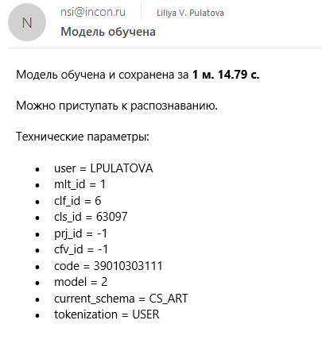Далее на форме «Работа с IBM-моделью» выбираем действие «Получить метрики». Затем нажимаем на кнопку .

Ожидаем письмо об окончании подсчета метрик. Метрики необходимы нам для оценки работы модели до и после проведения работ по токенизации. Поэтому метрики выгружаются до выполнения работ, после массовых изменений в процессе работы(если мы хотим оценить результат работы на определенном этапе) и после окончания работ над классом. Подробнее о метриках в разделе Получение метрик
Форма «Токенизация наименования»
Возвращаемся на форму «Токенизация наименования». Рассмотрим данную форму подробнее.
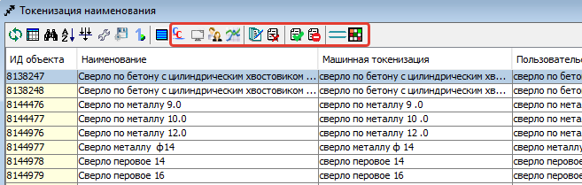Кроме рассмотренных в разделе Заполнение машинной и пользовательской токенизации, на данной форме находятся следующие кнопки:
Кнопка «Редактирование классификации объектов» позволяет массово редактировать объекты (изменять класс, привязки, статусы vso у одного или нескольких объектов).
Кнопка
 «Убрать из рассмотрения» позволяет исключить из формы один или несколько объектов.
«Убрать из рассмотрения» позволяет исключить из формы один или несколько объектов.Кнопка «Деблокировать токенизацию наименования» позволяет поставить одному или нескольким объектам статус токнизации наименования 1. Это может быть полезно в случае если нам необходимо отслеживать с какими объектами мы уже поработали, а с какими еще нет. Статус ставить не обязательно, данная функциональность используется для удобства работы эксперта.
Кнопка
 «Отклонить токенизацию объекта» изменяет статус токенизации наименования на 0. Если мы меняем пользовательскую токенизацию у объекта с уже деблокированным статусом токенизациии наименования, то статус автоматически меняется на 0.
«Отклонить токенизацию объекта» изменяет статус токенизации наименования на 0. Если мы меняем пользовательскую токенизацию у объекта с уже деблокированным статусом токенизациии наименования, то статус автоматически меняется на 0.Кнопка
 «Токенизированные наименования отличаются» позволяет вывести все объекты для которых машинная и пользовательская токенизация отличаются.
«Токенизированные наименования отличаются» позволяет вывести все объекты для которых машинная и пользовательская токенизация отличаются.При нажатии на кнопку 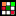 «Показать шахматку» в верхнней части формы появляется дополнительный блок, который отображает частоту использования подобранного значения ОД для определенного токена у выделенного объекта. Чем частота использования выше, тем более насыщенным зеленным цветом она выделена. Для скрытия блока необходимо повторно нажать на кнопку .

В блоке «Связь токенов зо значениями объекта» мы видим разделенный последовательно (попозиционно) на токены исходный текст объекта.

В блоке «Статистика токенов по IBM-модели» мы видим ОД, значения ОД и произведение трех вероятностей:
T - вероятность совместной встречаемости токена и значения ОД;
A - вероятность встречаемости значения ОД на данной позиции при заданной длине текста;
V - вероятность появления данного значения ОД.
Значения расположены в порядке убывания произведения вероятностей.
Note
Числа написаны в приближении до 10-5, т.е. если видим 0,00000 - это не ноль, а просто малое число.

Наша задача состоит в том, чтобы к каждому токену, который имеет смысловую нагрузку, привязать соответсвующее ему значение основания деления.
Мы можем вручную перетащить строку со значением ОД из блока «Статистика токенов по IBM-модели» в блок «Связь токенов зо значениями объекта». При этом если объекту в выбранном ОД было присвоено другое значение, либо в выбранном ОД отсутствовало значение, то объекту будет присвоено выбранное значение ОД и создана соответствующая связь. Привязывать все значения ОД к токенам вручную не эффективно, поэтому следует воспользваться модулем для автоматического проставления связей, данный модуль будет рассмотрен в следующем разделе Заполнение связей между токенами и значениями ОД автоматически.

Голубым цветом выделены поля которые соответсвуют ОД и значениям ОД присвоенным для объекта.
Белым цветом выведены поля с вероятными предлагаемыми значениями ОД, которые могут быть связаны с токеном.
Рассмотрим подробнее кнопки расположенные на нижних блоках формы.
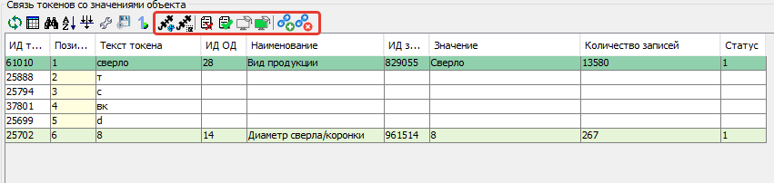Кнопка
 «Показать все токены, связанные с данным ОД» показывает токены, которые привязаны к выделенному ОД. Подробнее с данной формой познакомимся в разделе Удаление лишних связей в разрезе ОД
«Показать все токены, связанные с данным ОД» показывает токены, которые привязаны к выделенному ОД. Подробнее с данной формой познакомимся в разделе Удаление лишних связей в разрезе ОДКнопка 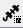 «Показать все токены, связанные с этим значением ОД» показывает токены, которые привязаны к выделенному значению ОД. Подробнее с данной формой познакомимся в разделе Удаление лишних связей в разрезе значений ОД
Кнопка
«Удалить связь токена со значениями ОД объекта» либо клавиша Delete позволяет удалить неккоректную связь между токеном и значением ОД.Кнопка «Деблокировать связь токена со значением объекта» изменяет на 1 статус связи между токеном и значением ОД. Когда мы заполненяем связи между токенами и значениями ОД вручную, то статус автоматически изменяется на 1. Все связи которые присвоены автоматически мы должны проверить и либо отвязать, либо деблокировать. Возможно массовое деблокирование связей. Для этого необходимо выделить объекты (не более 1000), выделить токены и нажать на кнопку . Если выделить все токены, то все связи будут деблокированы, если несколько, то только токены находящиеся на тех позициях которые были выбраны.
Кнопка «Заполнить отсутсвующие связи на основе статистики» позволяет у выделенных объектов заполнить связи между токенами и значениями ОД. Для каждого токена будет присвоено значение ОД с наибольшим значением произведения вероятностей T, A и V.
Последние 3 кнопки данного блока будут рассмотрены в разделе Создание прямых связей между токенами и значениями ОД

Кнопка
 «Выбрать лучший» оставляет в таблице значение ОД с наибольшим значением произведения вероятностей. Если наибольшим является значение производения вероятностей того, что у токена нет привязок к значениям, то таблица останется пустой.
«Выбрать лучший» оставляет в таблице значение ОД с наибольшим значением произведения вероятностей. Если наибольшим является значение производения вероятностей того, что у токена нет привязок к значениям, то таблица останется пустой.Кнопка
 «Только присвоенные значения ОД» оставляет в таблице только те значения, которые присвоены объекту
«Только присвоенные значения ОД» оставляет в таблице только те значения, которые присвоены объекту
Также мы имеем возможность вывести ОД со статусом 2, для этого необходимо установить флажок на соответсвующий чек-бокс. Если ОД корректное, значимое и возможно в дальнейшем будет использоваться на проектах, но сейчас в статусе 2 из-за редкого использования на текущий момент, то следует привязать его значения к токенам. Проектные ОД которые в будущем использоваться не будут можно исключить из рассмотрения. При автоматическом заполнении связей для ОД со статусом 2 связи не проставляются. Возможно временно изменить статусы данных ОД, чтобы связи проставились.
В данном блоке существует возможность изменения статуса vso. Для этого необходимо дважды щелкнуть по текущему значению и в выпавшем списке выбрать необходимый статус. Статусы vso подробнее рассмотрены в разделе Обработка отсутствующих связей между токенами и значениями ОД. Чаще всего точечное исправление статусов vso не эффективно. Эффективнее всего вести работы по исправлению статусов массово после того как будут проставлены и проверены все связи между токенами и значениями ОД.
Значение ОД «Не требуется» к токенам не привязываем.
Заполнение связей между токенами и значениями ОД автоматически
Чтобы заполнить связи сразу для всего класса необходимо перейти в функциональный модуль.
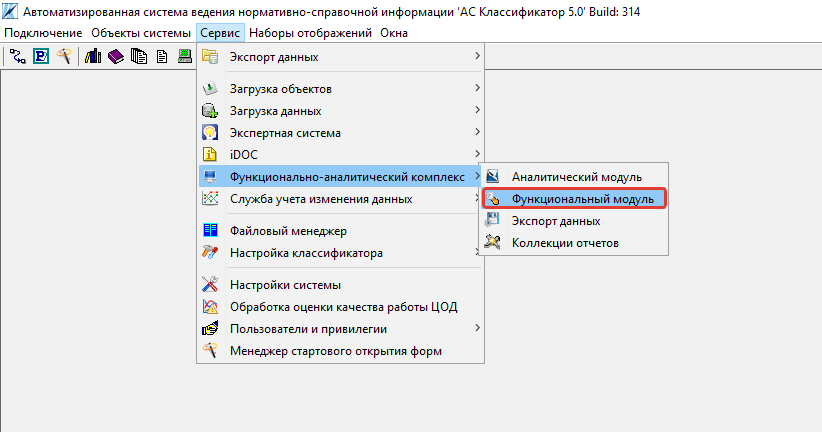Запускаем функциональный модуль 2636 «Заполнение связей токенов со значениями объектов по классу»

Заполняем значения параметров «Множество», «Классификация», «Класс», нажимаем кнопку «ОК»
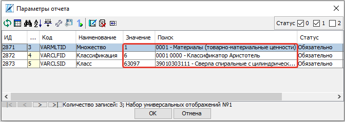Attention
Не запускайте данный модуль после того как почистили связи! Все “лишние” связи появятся вновь. Если необходимо заполнить или восстановить удаленные связи для конкретного ОД воспользуйтесь модулем Заполнение связей токенов со значениями объектов по ОД
Удаление лишних связей в разрезе ОД
После автоматического заполнения связей необходимо отвязать некорректные. Это можно сделать из формы «Основания деления класса», выделяем ОД и нажимаем кнопку «Токены, связанные с ОД», либо сочетание клавиш Ctrl+Shift+T
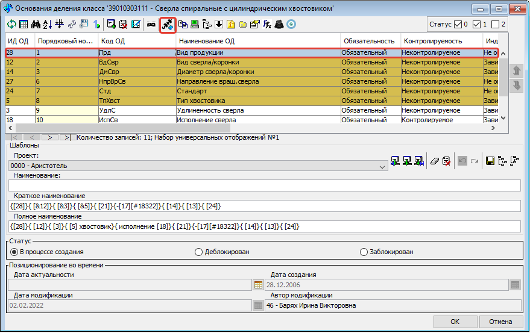На открывшейся форме «Токены, связанные с ОД» мы видим таблицу на которой отображены текст привязанного токена, количество связей данного текста с объектами обучающей выборки, вхождение данного текста в домен выбранного основания деления (те токены которые полностью соотвествуют значению ОД отмечены символом “V”).
Выделяем те связи которые мы считаем лишними и нажимаем кнопку «Удалить связь токена со значением ОД» либо клавишу Delete.
Note
Например для ОД “Стандарт” можно сразу удалить все связи с текстовыми токенами, т.к. они не указывают на стандарт. А для ОД “Вид продукции” удалить все числовые токены, т.к. они не могут указывать на вид продукции. Также связи с токенами отдельных букв и слов никак не связанных с видом продукции.
Чтобы просмотреть объекты обучающей выборки которые привязаны к конкретному токену необходимо выделить его и нажать на кнопку «Открыть связаннные с токеном объекты» на панели инструментов либо сочетание клавиш Ctrl+Shift+T.

При нажатии на кнопку «Показать значения ОД» мы можем видеть к какому значению основания деления привязан каждый из токенов.
Удаление лишних связей в разрезе значений ОД
Если домен значений ОД содержит небольшое количество значений, то следует отвязать неккоректные связи и на уровне значений. Для этого переходим на форму «Справочник значений ОД» и нажимаем на кнопку «Токены, связанные со значением ОД» либо сочетание клавиш Ctrl+Shift+T, предварительно выделив строку со значением ОД.
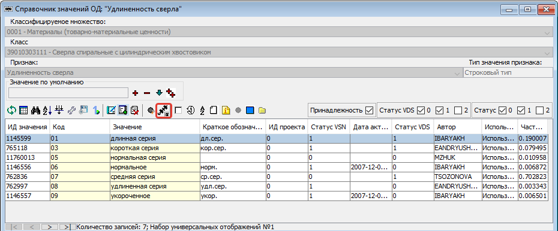На открывшейся форме «Токены, связанные со значением ОД» мы видим таблицу на которой отображены текст привязанного токена, количесвто связей данного текста с объектами обучающей выборки, T - вероятность совместной встречаемости токена и значения ОД.
Выделяем те связи которые мы считаем лишними и нажимаем кнопку «Удалить связь токена со значениями ОД объекта» либо клавишу Delete.
Note
Корректными связями между токенами и значениями ОД являются только те, которые прямо указывают на это конкретное значение ОД, а не косвенно. Например, если токен соответструет длине и из него видно, что сверло длинной серии, то такую связь со значением “длинная серия” оставлять не нужно, она должна быть удалена.
Чтобы просмотреть объекты обучающей выборки которые привязаны к конкретному тексту необходимо выделить его и нажать на кнопку «Открыть связаннные с токеном объекты» на панели инструментов либо сочетание клавиш Ctrl+Shift+T.

Note
Перейдя на форму “Токенизация наименования” мы можем наблюдать, что хоть токен “хв” и имеет максимальное количество связей со значением “длинная серия”, он не имеет к ней никакого отношения, соотвественно связь может быть удалена.
Attention
Каждый раз при внесени довольно большого количества изменений (изменения токенов, проставление и удаление связей) в токенизацию необходимо проводить Обучение модели на основе пользовательской токенизации. Т.е. ее надо проводить как минимум перед началом всех работ, после чистки связей токенов со значениями ОД и после окончания работ по токенизации класса.
Создание прямых связей между токенами и значениями ОД
- Прямая связь между токеном и значением ОД
показывает, что если среди токенов объекта есть данный токен, то он однозначно определяет данное значение ОД, т.е. в рамках одного домена значений ОД токен может быть привязан только к одному значению.
Проставить прямую связь можно тремя способами.
На форме «Токены, связанные со значением ОД», которую можно открыть с формы «Справочник значений ОД», выделить необходимое поле и нажать на кнопку «Добавить прямую связь между токеном и значением ОД». Строка с прямой связью будет выделена зеленым цветом. Для удаления связи нажать на кнопку
 «Удалить прямую связь токена со значением ОД».
«Удалить прямую связь токена со значением ОД».

На форме «Токены, связанные с ОД», которую можно открыть с формы «Справочник классов», нажать на кнопку
«Показать значения ОД», выделить необходимое поле и нажать на кнопку «Добавить прямую связь между токеном и значением ОД». Строка с прямой связью будет выделена зеленым цветом. Для удаления связи нажать на кнопку «Удалить прямую связь токена со значением ОД».

На форме «Токенизация наименования» выделить объект, также выделить связь на блоке «Связь токенов зо значениями объекта» и нажать на кнопку «Добавить прямую связь между токеном и значением ОД». Строка с прямой связью будет выделена зеленым цветом. Для удаления связи нажать на кнопку
«Удалить прямую связь токена со значением ОД».
Когда в классе уже создано достаточное количество прямых связей можно ограничить заполнение отсутствующих связей на основе статистики только прямыми связями. Для этого в блоке «Связь токенов зо значениями объекта» необходимо нажать на кнопку  «Заполнить отсутствующие прямые связи на основе статистики».
«Заполнить отсутствующие прямые связи на основе статистики».
Указывая прямую связь мы абстрагируемся от объекта, обращаем внимание чисто на домен ОД. Рассмотрим пример уже почищенных доменов с расставленными прямыми связями.
На скриншоте видно, что в домене с положительными числовыми значениями связи в основном будут прямыми, количество различных токенов привязанных к одному значению не велико.
В домене ОД Стандарт нельзя поставить прямую связь для токена 338, т.к. он однозначно не определяет значение ОД, в домене возможны 2 значения содержащие данный текст DIN 338-N и DIN 338.
В домене с текстовыми значениями может встречаться большое число токенов привязанных к одному и тому же значению. Правильным будет проставить прямые связи для наиболее встречающихся токенов. Для токенов с опечатками и для редко используемых прямая связь не ставится, т.к. данная прямая связь нарушит статистику наиболее часто встречающихся токенов и приведет к ухудшению качества работы модели.
Рассмотрим примеры отношения 1:1 в рамках привязки токена к домену конкретного ОД:
Note
В домене ОД “Минимальное значение” есть числа -20 и 20, в домене ОД “Максимальное значение” только положительные числа. В исторических данных видим текст “-20..20”, получаем токены 20 и 20. К первому токену 20 мы привяжем -20 из ОД “Минимальное значение” и к токену 20 мы привяжем 20 из ОД “Максимальное значение”. В домене “Минимальное значение” токен 20 не дает однозначно понять какое значение привязать, т.к. в домене есть и -20 и 20. Мы поняли, что надо привязать -20 ориентируясь не только на ту информацию, что есть в токене, но и на упущенную в токене информацию, т.е. знак минус. Это значит, что прямую связь между токеном 20 и значением ОД “-20” мы поставить не можем. В домене “Максимальное значение” нет отрицательных чисел, токен 20 однозначно определяет значение 20. В рамках этого ОД связь однозначная, т.е. прямая.
Другой пример:
Note
В классе “Молотки” токен “молоток” имеет прямую связь со значением ОД “Вид продукции” - “Молоток”. Токены “кирочка”, “кирка”, “МКИ” и т.д. имеет прямую связь со значением ОД “Тип молотка” - “Кирочка”. Токен “11042” имеет прямую связь со значением ОД “Стандарт” - “ГОСТ 11042”, а токен “гост” останется без привязки к значению ОД, т.к. данный текст сам по себе не определяет никакое значение ОД. В ОД “Масса бойка,г” токен 600 будет иметь прямую связь со значеним ОД 600 и токен 0,6 будет иметь прямую связь со значением ОД 600, т.к. оба эти токена встречаются довольно часто и однозначно определяют значение 600 ОД “Масса бойка,г”. При этом если в домене этого же ОД было бы значение 0,6, то токены 0,6 и 600 не имели бы прямой связи со значением 600 и значением 0,6, т.к. информацию о массе мы бы получали из упущенной в токене информации, т.е. единицы измерения кг или г.
Массовая обработка токенизированных наименований в разрезе значений ОД
На форме «Токенизация наименования» возможно массовое создание, редактирование, удаление связей между токенами и значениями ОД.
Для массового удаления связей необходимо выделить несколько объектов, также выделить связь на блоке «Связь токенов зо значениями объекта» и нажать кнопку «Удалить связь токена со значениями ОД объекта» на панели инструментов или в контекстном меню, либо нажать клавишу Delete.
Для массового создания связей нужно выделить несколько объектов и перетащить строку со значением ОД из блока «Статистика токенов по IBM-модели» в блок «Связь токенов зо значениями объекта».
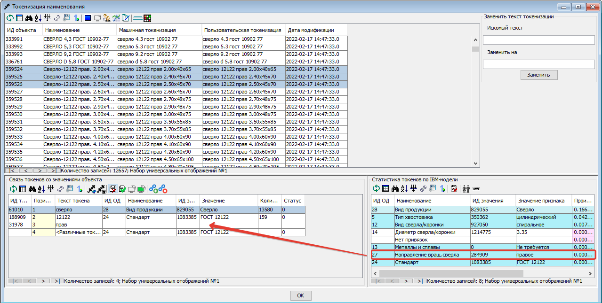Массовая обработка токенизированных наименований ограничена количеством объектов не более 1000.
На форме «Токенизация наименования» существует возможность поставить фильтр по конкретному токену на определенной позиции. Для этого из блока «Связь токенов со значениями объекта» перетащить необходимый токен в основной блок, тогда в основном блоке останутся только объекты с данным токеном на данной позиции.
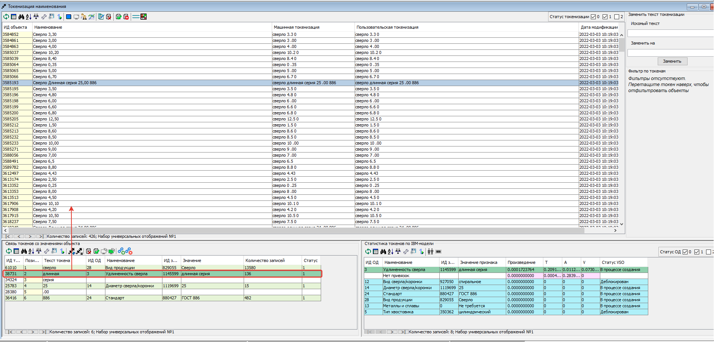В блоке «Фильтр по токенам» мы можем наблюдать поставленные фильтры. Для того чтобы снять фильтр необходимо нажать на крестик или на кнопку «Очистить фильтр».

Далее возможно выделить все или часть объектов и присвоить общему токену значение ОД.
Можно поставить сразу несколько фильтров. Также возможно обратить фильтр, т.е. вывести все объекты кроме тех для которых данный токен находится на выделенной позиции. Для этого необходимо нажать на кнопку  «Обратить фильтр».
«Обратить фильтр».
Обработка отсутствующих связей между токенами и значениями ОД
Для того чтобы модель обучалась более эффективно требуется корректировка фасетной классификации объектов, блокировка заполненных некорректных значений ОД объектов:
Значениям ОД прямо вытекающим из наименования, т.е. есть есть конкретные токены указывающие на значение, ставим vso=0 (обычно этот статус уже стоит по умолчанию);
Значение ОД не вытекающим из наименования, но однозначно следующим из другого значения ОД, которое присутствует в наименовании, ставим vso=1 (например когда размеры следуют из марки);
Значениям ОД взятым в результате доопределения заказчиком и статистическими методами, а также из полного наименования или других дополнительных полей, ставим vso=2;
Значения ОД которые по какой-либо причине не были заполнены заполняем.
Для удобства можно добавить в отображение столбец, в котором будут выведены ИД ОД, которые заполнены у объектов, но не имеют привязок к токенам:
(SELECT LISTAGG(v.dvs_id, ', ') WITHIN GROUP (ORDER BY v.dvs_id)
--LISTAGG(v.dvs_id ': ' NVL(n.valchar, n.valnum), '; ') WITHIN GROUP (ORDER BY v.dvs_id)
FROM vso v, vsn n
WHERE v.mlt_id = :MLT_ID
AND v.clf_id = :CLF_ID
AND v.cls_id = :CLS_ID
AND v.status = 0
AND v.vsn_id <> 0
AND v.obj_id = a.obj_id
AND n.mlt_id = :MLT_ID
AND n.sgn_id = v.sgn_id
AND n.vsn_id = v.vsn_id
AND NOT EXISTS (
SELECT NULL
FROM vcl
WHERE mlt_id = v.mlt_id
AND clf_id = v.clf_id
AND cls_id = v.cls_id
AND dvs_id = v.dvs_id
AND sgn_id = v.sgn_id
AND vsn_id = v.vsn_id
AND obj_id = v.obj_id
)
)
Столбец можно добавить на форме «Настройка отображения», путем добавления функции на любой ненужный столбец отображения.

Можно проверить и обратную ситуацию, когда привязка значения ОД к токену есть, но статус vso не равен 0.
(SELECT LISTAGG(v.dvs_id, ', ') WITHIN GROUP (ORDER BY v.dvs_id)
--LISTAGG(v.dvs_id ': ' NVL(n.valchar, n.valnum), '; ') WITHIN GROUP (ORDER BY v.dvs_id)
FROM vso v, vsn n
WHERE v.mlt_id = :MLT_ID
AND v.clf_id = :CLF_ID
AND v.cls_id = :CLS_ID
AND v.status <> 0
AND v.vsn_id <> 0
AND v.obj_id = a.obj_id
AND n.mlt_id = :MLT_ID
AND n.sgn_id = v.sgn_id
AND n.vsn_id = v.vsn_id
AND EXISTS (
SELECT NULL
FROM vcl
WHERE mlt_id = v.mlt_id
AND clf_id = v.clf_id
AND cls_id = v.cls_id
AND dvs_id = v.dvs_id
AND sgn_id = v.sgn_id
AND vsn_id = v.vsn_id
AND obj_id = v.obj_id
)
)
Массовое изменение статуса VSO реализовано на форме редактирования объектов. Если у различных значений ОД один статус - отображается этот статус, редактирование доступно. Если у различных значений ОД текущий статус VSO отличается - отображается значение “Различные значения”, редактирование статуса VSO будет происходить одновременно для всех значений ОД (без учета текущего). Но в случае, если у части объектов значение не присвоено, то статус VSO поменять не получится. Для того чтобы менять статус VSO для конкретного значения ОД удобно пользоваться обратным фильтром.
Исправление токенизации
Исправление токенизации возможно в режиме редактирования текста по одному объекту, в режиме замены по любому числу выделенных объектов или SQL-запросом к таблице TON. По опыту тестирования инструмента основные операции в исправлении токенизации:
возврат удаленного символа (часто это единица измерения после числа, которой нет в значениях ОД),
разделение токенов (несколько слов могут быть слеплены в одно, например, из-за сокращений),
объединение токенов (часть слова может быть отделена, так как сама является валидным токеном, либо значение ОД является диапазоном).
В целом важно понимать, что токенизированное наименование стремится к нормализованному.
Решение об объединении токенов эксперт принимает самостоятельно в рамках каждого класса. Но решение должно быть единообразно в рамках одного ОД. Т.е. если вы решили объединить токены каталожного номера, то это должно быть решение для всех каталожных номерах, а не для части.
Чтобы массово изменить тексты пользовательской токенизации используется блок «Заменить текст токенизации». В поле «Искомый текст» вводим текст который требует коррекции, в поле «Заменить на» обновленный текст. Далее выделяем записи в которых необходимо произвести замену и нажимаем кнопку «Заменить».
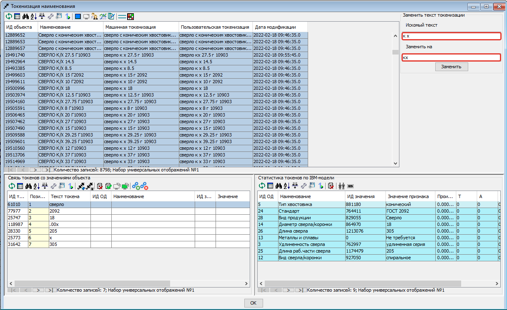Получение метрик
Для контроля эффективности выполненных работ разработан сервис «Получить метрики» - подсчет метрик по распознаванию значений ОД в классе.
На форме «Справочник объектов» и на панели инструментов нажимаем на кнопку «Обучить IBM-модель для класса»
На открывшейся форме «Работа с IBM-моделью» выбираем действие «Получить метрики». Затем нажимаем на кнопку Отправить данные .
Ожидаем письмо об окончании подсчета метрик.
Attention
Не стоит при каждом изменении данных смотреть метрики. Необходимо сделать подсчет в начале работы и после окончания работы над классом.

Рассмотрим подробнее какую информацию мы можем получить из метрик. Каждый из проектов рассматривается как новый, в котором еще отсутствуют привязки к значениям ОД. Метрики дают оценку того насколько эффективно определились значения ОД на основании модели. 1 означает, что все значения данного ОД в данном проекте были определены корректно, меньшее число означает долю корректно определенных значений.
Если доли после работы с классом стали ниже, то нужно подробнее изучить почему так произошло. Это может быть в результате ошибки эксперта. Например в случае если значения на основании модели доопределились, но объекты не проработаны и значения ОД не привязаны. Либо могут быть неккоректно расставлены прямые связи, присутствовать лишние связи между токенами и значениями.
В некоторых случаях снижение доли не является результатом ошибки. Например, когда значения ОД не следуют из токенов, но мы заполняем их ориентируясь на стандарт или другие источники. Например в случае со сверлами: в одних случаях токен “с” может соответсвовать значению “спиральное”, в других случаях, где “с” это предлог, токен “с” не соответствует ни одному из значений. На проекте НЛМК, где токен “с” во всех объектах был лишь предлогом, доля корректно определенных значений упала существенно с 0,52 до 0,01.
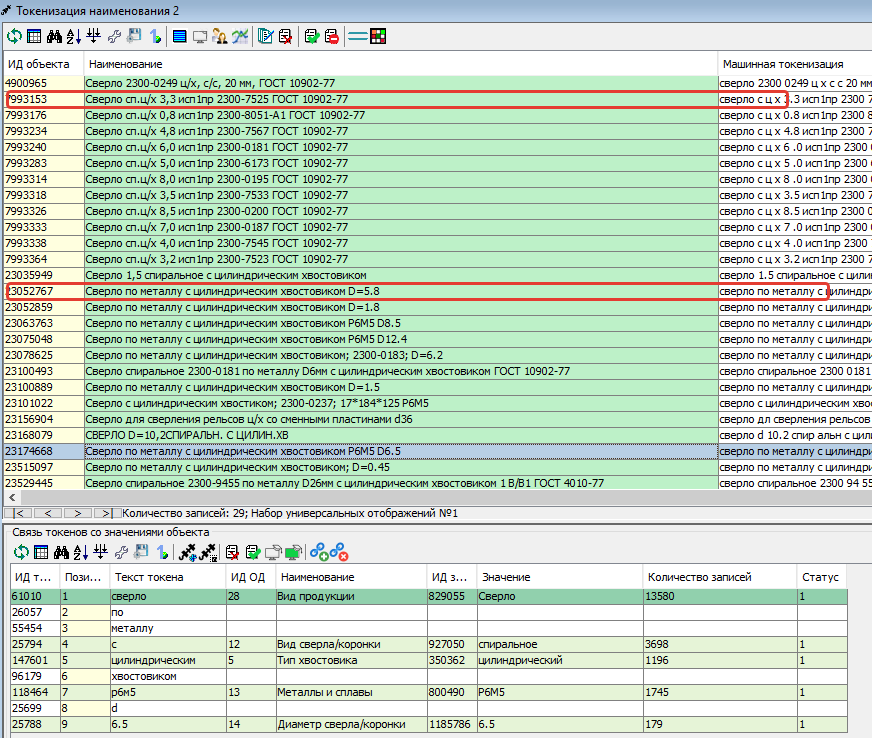Note
Если сложно определить причины ухудшения метрик, то можно действовать следующим образом. Выбираем объекты проекта в котором метрики стали хуже, ставим объектам статус 0. Затем выгружаем в Excel, смотрим и анализируем каким образом доопределяются значения, какое значение присвоено и какое предложено. Если вы решили воспользоваться данным способом, то обратите внимание на объекты у которых изначально стоит статус 0, их необходимо временно перенести или пометить каким-либо способом. Чтобы после того как поработаете с выгруженными объектами суметь отделить их от объектов со статусом 0.
Заполнение связей токенов со значениями объектов по ОД
Существует возможность автоматического заполнения связей токенов со значениями объектов не для всего класса, а для конкретного ОД. Для этого переходим в функциональный модуль и запускаем модуль 2637 «Заполнение связей токенов со значениями объектов по ОД»
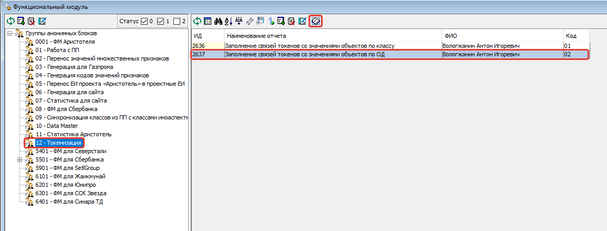Заполняем значения параметров «Признак», «Основание деления», «Множество», «Классификация», «Класс» нажимаем кнопку «ОК»

Необходимость данного модуля может возникнуть в ситуации, когда мы уже поработали с классом, а затем обнаружили необходимость в изменении или создании связей конкретного ОД. Например в классе было призведено изменение структуры и один ОД был разделен на два или добавлен новый. Либо была обнаружена ошибка и часть связей была зря удалена. В таком случае мы не хотим трогать все ОД которые уже были почищенны и можем автоматически проставить связи только для конкретного ОД.
Особые ситуации
В некоторых фрагментах и классах могут возникать особые ситуации и договоренности. Если вы считаете, что в даннный раздел необходимо добавить вашу ситуацию, то обратитесь к сотруднику ответсвенному за инструкцию.
Фрагмент 39. Условное обозначение
В 39 фрагменте во многих классах присутствует ОД “Условное обозначение”. Это числовой код из 8 цифр из которого следует большинство характиристик инструмента (тип, размеры, исполнение и т.д.). Условное обозначение записывается в виде хххх-уууу. Для одного ГОСТ хххх обычно одинаковы, а yyyy уникальны. На данный момент модель разбивает условное обозначение на 2 токена хххх и yyyy. Было принято решение объединять токены. т.е. приводить к виду ххххуууу. В классах где используется малое количество ГОСТов и часть уууу всегда уникальна можно не объединять токены, а привязывать токен yyyy прямой связью к значениям ОД. хххх в случае если она одинакова для всего класса можно не привязывать, если возможны разные значения, то привязывать не прямой связью.
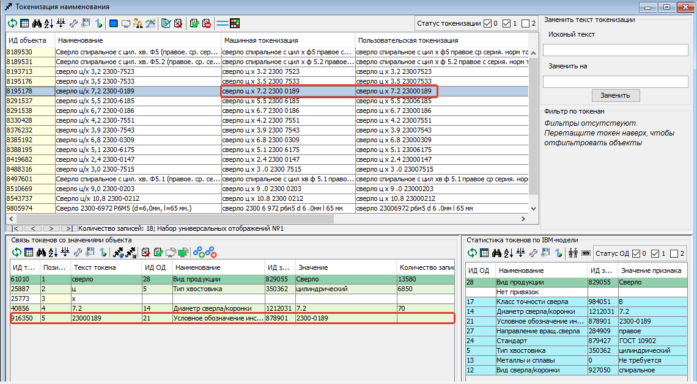Разделение ОД
Иногда в процессе токенизации возникает ситуация которая указывает на то, что необходимо провести какие-либо изменения в структуре класса. Например разделить одно ОД на два. В классе 4230706 Пояса мерительные изначально домене ОД «Вид продукации» были значения «Пояс мерительный под кассеты» и «Пояс мерительный со свинцовыми цифрами». В процессе токенизации возникла следующая проблема, связи между значением ОД Вид продукции и токенами «пояс» и «мерительный»(«мерный») мы не могли сделать прямыми, т.к. токены «пояс» и «мерительный» в рамках одного домена не однозначно определяли значение ОД.

Было принято решение выделить дополнительное ОД «Тип пояса», теперь каждую из связей мы можем сделать прямой.
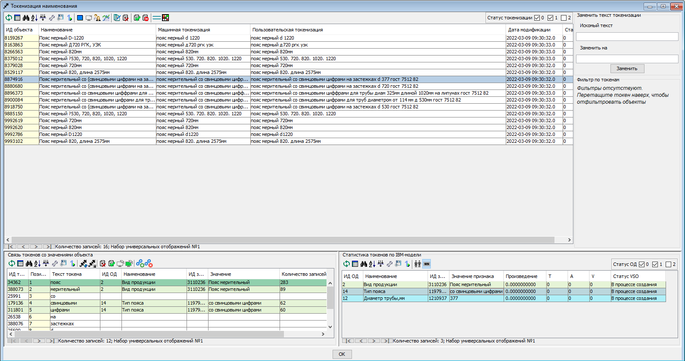